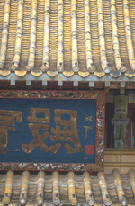

| Синтоизм http://schools.keldysh.ru/school1413/religija/sinto.htm |
|  |
| Говорят, что в Японии восемь миллионов божеств. Это почти соответствует действительности. В японской религии синто, или синтоизме, как называют её европейцы, к числу божеств, именуемых ками, относятся божественные предки японского народа; духи гор, рек , камней, деревьев, огня, ветра; божества-покровители отдельных местностей и ремёсел; божества, олицетворяющие человеческие добродетели; духи умерших. Ками незримо присутствуют везде и всюду участвуют во всём происходящем. Они буквально пронизывают окружающий мир.
Само название религии "синто" состоит из двух иероглифов: "син" и "то". Первый переводится как "божество" и имеет ещё другое прочтение- "ками", а второй означает "путь". Таким образом, дословный перевод "синто"- "путь богов". Что же стоит за столь необычным названием? Строго говоря, синто- языческая религия. Основу её составляет культ предков и поклонение силам природы. Синто- национальная религия, адресованная не всему человечеству, а только японцам. Она возникла в результате объединения верований, распространённых в отдельных местностях Японии, вокруг культа, который сложился в центральной провинции Ямато и связан с божествами- предками императорского дома. В синто сохранились и продолжают жить древнейшие формы верований, такие, как магия, тотемизм (почитание отдельных животных в качестве покровителей), фетишизм (верование в сверхъестественную силу амулетов и талисманов). В отличие от многих других религий синто не может назвать своего конкретного основателя- человека или божество. В этой религии вообще отсутствуют какие - либо чёткие различия между людьми и ками. Люди, согласно синто, произошли непосредственно от ками, живут с ними в одном мире и могут переходить в разряд ками после смерти. Поэтому не обещает спасения в каком-то другом мире, а идеалом считает гармоничное существование человека с окружающим миром, в духовном единстве. Ещё одной особенностью синто является множество ритуалов, сохранившихся практически без изменеий на протяжении веков. В то же время догматика синто занимает по сравнению с ритуалом весьма незначительное место. Вначале в синто не было никаких догм. Со временем под влиянием заимствованных с континента религиозных учений отдельные священнослужители пытались создать догматы. Однако в результате возник лишь синтез буддийских, даосских и конфуцианских идей. Они существовали независимо от собственно религии синто, основным содержанием которой до настоящего времени остаются обряды. В отличие от других религий синто не содержит моральных установок. Место представления о добре и зле здесь занимают понятия чистого и нечистого. Если человек "запачкался",т.е. совершил нечто неподобающее, он должен пройти через ритуал очищения. Действительным грехом в синто считается нарушение мирового порядка - "цуми", и за подобный грех человеку придётся платить и после смерти. Он отправляется в Страну Мрака и там ведёт тягостное существование в окружении злых духов. Но развитого учения о загробном мире, аде, рае или Страшном Суде в синто нет. Смерть рассматривается как неизбежное затухание жизненных сил, которые затем возрождаются вновь. Синтоистская религия учит, что души умерших находятся где - то неподалёку и ничем не отгорожены от мира людей. Для последователя синто все основные события происходят в этом мире, который рассматривается как лучший из миров. От приверженца этой религии не требуется ежедневных молитв и частых посещений храмов. Вполне достаточно участия вхрамовых праздниках и исполнениях традиционных обрядов, связанных с важными событиями в жизни. Поэтому сами японцы нередко воспринимают синто как совокупность национальных событий и традиций. В принципе ничто не мешает синтоисту исповедовать любую другую религию, даже считать себя атеистом. На вопрос о религиозной принадлежности лишь очент немногие японцы отвечают, что они синтоисты. И всё-таки исполнение обрядов синто неотделимо от повседневной жизни японца с момента его рождения до самой смерти, просто в большинстве своём обряды не рассматриваются как проявление религиозности. МифыГлавными священными книгами синто считаются “Кодзики” (“Записи о делах древности, 712 года) “Нихонги” (“Японские хроники”, 720года). Они не похожи на канонические книги других религий, прежде всего потому, что не являются религиозными книгами в буквальном смысле этого слова, а представляют собой летописно- мифологические своды. В них впервые были собраны и записаны сохранившиеся устные японские сказания и легенды. Именно они лежат в основе ритуала синто. “Кодзики” и “Нихонги” с небольшими различиями передают одни и те же события. В “Нихонги” изложение каждого сюжета завершается перечислением других его вариантов.Хроники царствований древних императоров представлены в обоих сводах как продолжение мифов. На смену поколениям божеств приходят поколения императоров. Возникновение мира и деяния богов происходят в так называемую “эру богов”, которая никак не определена во времени. В “Кодзики” повествование охватывает период с момента возникновения мира до 628 г. н.э., в “Нихонги” соответственно - до 700 г. н.э.. А записи мифов в обоих появились в начале VIII веке, то есть два столетия спустя после знакомства с континентальной культурой. Поэтому вполне закономерно, что помимо местных верований в них присутствуют также различные заимствования из китайской мифологии и философии. Более того, сами мифы обрабатывались в духе китайских исторических хроник того времени. Оба мифологических свода начинаются с раздела возникновения мира. Вначале был хаос: все элементы мира пребывали в смешанном состоянии. В “Нихонги” мир описывается похожим на океан масла или на яйцо, которое не имело чётких границ, но содержало в себе зародыши. Затем Небо отделилось от Земли - появилась Равнина Высокого Неба (Такамагахара) и острова Акицусима. Как сказано в “Кодзики”, именно тогда возникли три божества: Амэноминакануси (бог - Хозяин центра Неба), Такамимусуби и Камимусуби - Связующие божества. Они не создавали, а как бы “плели” ткань мира из различных элементов. В “Нихонги” первым “выпрыгнул” из хаоса Кунитокотати ( божество Вечного Установления Земли). Следом за ним, как описывается в обоих сводах, появилось ещё несколько божеств, бесформенных и бесполых. Затем возникли божественные пары братьев и сестёр. Все они олицетворяют различные природные явления (например, бог Всплывающей грязи и богиня Осаждающегося песка). Всего таких пар насчитывается восемь. Последней парой были Идзанаги (Призывающая жена). По приказанию ранее присшедших в мир божеств Идзанаги и Идзанами, Стоя рядом на Плавающем Небесном мосту, опустили драгоценное копьё в море, расстилавшееся под ними, и стали размешивать его. Когда копьё вынули, капли, стекавшие с его острия обратно в море, образовали остров Онногоро. Идзанаги и Идзанами сделали его Срединным Столпом Всей Земли. Они низошли на только что возникший остров и заключили брак. От их союза родились японские острова и множество новых божеств, ставших первыми жителями архипелага.Наконец, произведя на свет бога Огня, Идзанами заболела и умерла, но за время болезни она успела породить немало новых божеств. Идзанаги очень страдал из- за смерти своей жены- сестры: он плакал, и из его слёз также появлялись новые божества. В порыве отчаяния Идзанаги схватил свой меч шириной в десять ладоней и отсёк голову собственному сыну- богу Огня, кровь которого дала жизнь целому ряду новых божеств. Видимо, в это время появляются люди, но из- за того, что между ками (богами) и людьми отсутствует чёткая разница, в мифологии синто этот момент никак не выделен. После смерти Идзанами отправилась в Страну Мрака (Ёминокуни). Идзанаги последовал за ней, чтобы вернуть обратно в верхний мир. Однако он нашёл Идзанами в состоянии разложения, покрытую червями, и в ужасе обратился в бегство.Разгневанная Идзанами послала вслед за ним ведьм, а затем войско из пятнадцати сотен воинов. Идзанаги удалось избавиться от преследователей, после чего он закрыл большой скалой проход из Страны Света в Страну Мрака.Находясь по другую сторону скалы, Идзанаги сказал, что каждый день будет строить полторы тысячи хижин для рожениц. Таким образом жизнь восторжествовала над смертью.Вернувшись в Страну Света, Идзанаги очистился, совершив омовение в реке . Когда он сбросил одежду, из его платья и украшений появилось около дюжины божеств. Из родимых пятен на теле также возникли божества. В конце концов, согласно версии “Кодзики”, из его левого глаза появилась богиня Солнца Аматтэрасу, из правого бог Луны Цукиёми, из носа- бог Бури и Ветра Сусаноо. Идзанаги отдал во власть Аматэрасу Равнину Высоког Неба, а Сусаноо - Равнину Моря. После этого началась борьба Аматэрасу и Сусаноо. Однажды Сусаноо объявил о намерении навестить свою мать в Стране Мрака, а перед этим направился в Небесное царство своей сестры Аматэрасу, чтобы попрощаться с ней. Богиня Солнца решила, что брат посягает на её владения, и встретила его в полном боевом снаряжении. Сусаноо уверил её в доброте своих намерений и в доказательство решил устроить соревнование по рождению божеств, которое даст возможность рассудить, кто из них прав. Аматэрасу произвела детей из меча Сусаноо, а он из яшмового ожерелья Аматэрасу. Рождение трёх чистых девушек из предмета, принадлежавшего Сусаноо, подтвердило чистоту его помыслов. Однако на этом раздоры брата с сестрой не закончились. Находясь в царстве богини Аматэрасу, Сусаноо причинил ей разного рода неприятности: засыпал землёй оросительные каналы и межи на рисовых полях, осквернил её жилище и обидел её помощниц. Подобные действия в Древней Японии расценивались как тяжёлое оскорбление. Рассерженная Аматэрасу удалилась в небесный грот, и на всей Равнине Высокого Неба наступила тьма. Божества собрались на дне Небесной реки, чтобы придумать, как выманить Аматэрасу из грота. Сначала они посадили перед входом в грот петухов и заставили их петь, затем повесили на дерево ожерелье из резных яшм, зеркало и подношения в виде белых одежд и хором начали звать её. Богиня Аманоудзумэ стала исполнять танец, сопровождающийся громким топотом и неприличными жестами. Глядя на этот танец, божества громко смеялись, а Аматэрасу, заинтересовавшись, выглянула из грота. Увидев своё отражение в зеркале, она наконец вышла наружу. Позади неё божества протянули верёвку, преградившую ей путь обратно. Сразу же солнечный свет возвратился в мир. Сусаноо изгнали из Равнины Высокого Неба. Перед этим ему пришлось поднести божествам искупительную жертву в тысячу обедов и в знак раскаяния вырвать себе ногти на руках и на ногах. После этого эпизода мифы утрачивают смысловую нить и распадаются на множество отдельных сюжетов. Один из них посвящён дальнейшей судьбе Сусаноо, который спустился на землю в стране Идзумо в западной части японского острова Хонсю. Там ему повстречались старик Асинадзути и его жена Тенадзути, которые громко плакали вместе со своей дочерью по имени Кусинада. Сусаноо спросил в чём причина их несчастья, и узнал, что восемь лет назад в этой стране поселися восьмиглавый и восьмихвостый змей, пожиравший молодых девушек. Каждый год он приходил в их семью и губил их дочерей одну за другой, и теперь настала очередь последней из сестёр. Сусаноо взялся помочь старикам при условии, что они отдадут ему в жёны Кусинаду. По его просьбе 8 бочек наполнили рисовой водкой - сакэ - и выставили на восьми возвышениях. Змей нашёл приманку и, просунув в каждую бочку по голове, осушил их до дна. Когда он, опьянев, уснул, Сусаноо разрубил его на куски. Из тела змея Сусаноо извлёк особый Меч, Секущий Травы(Кусанаги но цуруги), который послал в подарок Аматэрасу. Затем Бог Ветра и Бури Сусаноо женился на спасённой девушке и поселился с ней во дворце. Они произвели на свет несколько поколений земных божеств. Наиболее знаменитым из их потомков был Окунинуси - Повелитель Великой Страны(Идзумо), которому посвящён целый цикл мифов. Он так же, как и Сусаноо, пришёл к власти в стране, преодолев многие препятствия, которые чинили ему старшие братья. Окунинуси скрывался от своих братьев и спускался за советом в Страну Мрака, где в это время пребывал Сусаноо. Там он встретил дочь Сусаноо - Первую принцессу. Сначала Сусаноо устроил Окунинуси ряд испытаний - поместил его в комнату, полную ос и сороконожек, поджёг траву на поле, где он искал выпущенную из лука стрелу. В конце концов Окунинуси удалось усыпить Сусаноо и похитить его дочь. Убедившись, что Окунинуси его перехитрил, Сусаноо посоветовал ему обратить меч и лук против злых братев. Вернувшись из Страны Мрака, Окунинуси победил своих братьев ипринялся за устройство страны. В этом ему помогало крошеное божество Сукунабикона, приплывшего к берегам Идзумо на лодочке из древесной коры. Окунинуси оставался правителем Великой Страны до тех пор, пока Аматэрасу не решила установить правление небесных богов в Серединной Стране Тростниковых Зарослей(т. е. Японии). Она трижды посылала к Окунинуси своих представителей, чтобы уговорить его уступить власть над Идзумо. Наконец очередная экспедиция увенчалась успехом, и внук Аматэрасу Ниниги сошёл с Неба на Землю, чтобы стать правителем Идзумо. Вместе с ним на Землю спустились пять божеств - родоначальники основных правящих кланов Японии. В качестве знаков императорской власти богиня Аматэрасу вручила своему внуку три драгоценности: яшму, зеркало и знаменитый меч, который Сусаноо добыл, победив восьмиглавого змея. Эти три предмета до настоящего времени составляют священные регалии императорской власти. Зекало символизирует правдивость, яшмовые подвески - милосердие, а меч - мудрость. Император управлял страной, прибегая к этим божественным символам, переданным ему богиней Солнца. С именем Ниниги в “Кодзики” и “Нихонги” связан также сюжет о его женитьбе. Легенды повествуют о том, как бог Оямацуми послал ему двух своих дочерей: младшую - красавицу Сакуя-химэ(цветную деву) и старшую - уродливую Иванга-химэ(деву-скалу). Предложив на выбор сразу обеих дочерей, бог Оямацуми поклялся, что если Ниниги возьмёт в жёны старшую, их потомки будут жить вечно, а если младшую, то их жизнь будет такой же недолгой, как жизнь цветов. Ниниги выбрал красавицу, поэтому жизнь человека на земле так коротка. Среди детей внука богини Аматэрасу были два принца - Ходэри и Хоори. Ходэри обладал “морским счастьем”, т.е. занимался рыбной ловлей, Хоори - “горным счастьем”, иными словами, был охотником. Однажды Хоори предложил поменяться и взял у брата его рыболовный крючок. Однако, когда он стал ловить рыбу, у него ничего не получилось, и вдобавок он уронил крючок в море. Ходэри потребовал вернуть крючок любой ценой, и тогда Хоори отправился на его поиски в морское царство. Там он женился на дочери морского царя Тойётомэхимэ, возратил с её помощью потерянный крючок и вернулся назад. На прощанье морской царь подарил Хоори амулеты прилива и олива, с помощью которых тот полностью подчинил себе своего брата-рыбака. Итак, большинство сказаний, собранных в “Кодзики” и “Нихонги”, представляют собой истории борьбы того или иного персонажа за установление власти над какой - либо территорией с обязательным включением любовного сюжета. Эти легенды отражают борьбу между группами племён древней Японии. Среди подобных повествований выделяется миф о походе потомка Ниниги Ивар-эхико(посмертное имя Дзимму) с острова Кюсю на централный остров Хонсю, чтобы подчинить непокорённые центральные области Ямато. Этот миф дал начало официальному празднику основаня империи. Он называется Кигэнсэцу и отмечается в Японии 11 февраля. Начало правления Дзимму является первым датированным событием(660г.до н.э.) в “Кодзики” и “Нихонги” и знаменует собой переход от “эры богов” к истории царствования земных императоров, но учёные полагают, что легендарный подход мог состояться не ранее III- начала IV в.н.э. Однако, все последующие императоры, о которых повествуют летописно - мифологические своды, продолжали родословную линию, восходящую непосредственно к богине Аматэрасу. В “Кодзики” и “Нихонги” отражён способ восприятия мира, характерный для язычества и в то же время имеющий ряд особенностей. Созидание мира в японской мифологии происзодит самопроизвольно, без воздействия какой - либо внешней силы. Отсутствует отдельный миф о створении человека, подразумевается, что люди являются прямыми потомками богов. Нет непреодолимых преград между тремя основными мифологическими мирами - Равниной Неба, Страной Тростниковых Зарослей и Страной Мрака; все они мысляться как реально существующие и сообщающиеся между собой. Мифы пронизаны чувством гармонии человека и его естественного окружения - нет ни одного описания его борьбы с силами природы. |
| Откровенное язычество и развитая мифология не оставляют места для конструктивного разбора причин и следствий этого культурного феномена. |